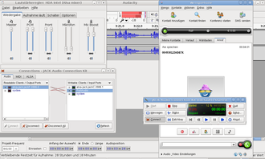

JACK
Dieser Artikel wurde für die folgenden Ubuntu-Versionen getestet:
Ubuntu 14.04 Trusty Tahr
Zum Verständnis dieses Artikels sind folgende Seiten hilfreich:
JACK  ist ein Soundserver mit niedrigen Latenzen (Verzögerungszeiten) für POSIX-konforme Betriebssysteme wie GNU/Linux oder Apple Mac OS X. Es kann eine Anzahl von Programmen sowohl mit Audiogeräten als auch untereinander verbinden. Z.B. kann ein erstes Abspielprogramm mit einem Streamserver verbunden, gleichzeitig ein Mikrofon mit Audacity verbunden und auch noch ein zweites Abspielprogramm mit dem Lautsprecher zum Anhören verbunden werden. JACK wurde von Grund auf für den professionellen Einsatz konzipiert, wobei zwei Ziele besondere Bedeutung hatten: Synchronität aller Clients und niedrigste Latenzen.
ist ein Soundserver mit niedrigen Latenzen (Verzögerungszeiten) für POSIX-konforme Betriebssysteme wie GNU/Linux oder Apple Mac OS X. Es kann eine Anzahl von Programmen sowohl mit Audiogeräten als auch untereinander verbinden. Z.B. kann ein erstes Abspielprogramm mit einem Streamserver verbunden, gleichzeitig ein Mikrofon mit Audacity verbunden und auch noch ein zweites Abspielprogramm mit dem Lautsprecher zum Anhören verbunden werden. JACK wurde von Grund auf für den professionellen Einsatz konzipiert, wobei zwei Ziele besondere Bedeutung hatten: Synchronität aller Clients und niedrigste Latenzen.
Was unterscheidet JACK von Soundsystemen auf anderen Betriebssystemen?
Core Audio ist das Audio-API von Mac OS X und ähnelt JACK in technischer Hinsicht, ermöglicht aber anders als JACK kein Routing zwischen Audioanwendungen. Core Audio beinhaltet auch Hardwaretreiber, während JACK auf einer höheren Ebene (ALSA/OSS/PortAudio) ansetzt.
ASIO ist ein Treibersystem zum Ersatz der nativen Systeme von Windows und Mac OS X. Es ermöglicht niedrige Latenzen, kann aber Anwendungen anders als JACK nicht untereinander verbinden.
ReWire ist ein API, das die Kommunikation von Audioanwendungen untereinander ermöglicht. Es ist für Windows und Mac OS X verfügbar und ähnelt JACK insofern, als es ebenfalls Routing zwischen Anwendungen ermöglicht. Allerdings erlaubt es keine vollkommen voneinander unabhängigen Prozesse und hat einige Einschränkungen ("bis zu 64 Kanäle" usw).
Grundlagen¶
ALSA ist das Grundsystem, welches auch die Gerätetreiber für Soundkarten verwaltet. JACK wiederum setzt auf ALSA auf und bietet einige Vorteile, aber auch Nachteile:
Vorteile:
Geringe Verzögerung bei der Audio- und MIDI-Verarbeitung (low-latency)
Man kann sehr leicht Audio- und MIDI-Daten von einem JACK-Programm zu einem anderen leiten. So kann beispielsweise ein Musikprogramm wie Rosegarden mehrere Hardware- und Softwaresynthesizer synchron steuern und die Audiodaten der Softwaresynthesizer können durch weitere Effektprogramme in Echtzeit nachbearbeitet werden.
Nachteile:
Die Verzögerung in JACK niemals kleiner sein als die durch ALSA verursachte
Zum Betrieb von JACK-Anwendungen muss man immer erst einen JACK-Server starten
Der JACK-Server blockiert in der Regel alle Nicht-JACK-Programme
Für den Benutzer evtl. nicht direkt sichtbar ist, dass JACK auch MIDI-Daten ähnlich wie Audio-Daten behandelt. Das führt unter anderem dazu, dass MIDI-Daten nur mit einer Zeitgenauigkeit versandt werden können, die von der Audio-Abtastrate abhängt.
Zudem lassen sich auch mit ALSA MIDI-Anwendungen miteinander verbinden, entweder grafisch mit patchage oder auf der Kommandozeile mit aconnect. Audiodaten hingegen können nur schwer von einer Anwendung zur anderen weitergeleitet werden.
Arbeitsweisen¶
Um zu verstehen, warum JACK dennoch gebraucht wird, muss man verstehen, wie ALSA und JACK intern arbeiten. Die Verarbeitung von Audio- und MIDI-Daten ist jeweils gleich organisiert.
ALSA¶
Eine ALSA-Anwendung, die Daten verarbeitet, funktioniert in etwa so:
Das Programm holt die aktuell anstehenden Daten ab, verarbeitet diese und verschickt sie anschließend weiter. Die Verarbeitung der Daten kann unterschiedlich lange dauern. Selbst wenn die Daten praktisch nicht verändert werden, führt schon das Abholen und Versenden zu Verzögerungen.
Damit die Daten dennoch gleichförmig weiterversendet werden, muss das Programm eine gewisse Verzögerung einbauen. Diese Verzögerung muss länger sein, als die Datenverarbeitung im schlimmsten Fall an Zeit benötigt.
Daraus ergeben sich zwei schwerwiegende Probleme:
Schaltet man mehrere Anwendungen hintereinander, so addieren sich deren Verzögerungen
Steuert ein Programm zwei weitere Audio-Anwendungen, so sind deren Verzögerungen im Allgemeinen verschieden und deren Ergebnisse werden nicht mehr synchron ausgeliefert
JACK¶
JACK dreht den Spieß um: Es wartet nicht darauf, dass ein Anwendungsprogramm nach Daten fragt, sondern es ruft das Anwendungsprogramm auf, sobald neue Daten vorliegen. JACK basiert also auf Rückruffunktion (call back). Weiterhin verarbeitet JACK sowohl Audio- als auch MIDI-Daten in Paketen gleicher Dauer. Die Paketlänge bestimmt die Mindestverzögerung durch JACK.
Bei einem komplexen Netzwerk von verbundenen Audioprogrammen ruft JACK für jeden Zeitabschnitt alle Programme in der richtigen Reihenfolge auf. Ausgegebene Pakete eines Programms können dabei Eingabepakete für ein anderes Programm sein. Der Clou ist, dass JACK alle Programme innerhalb der Dauer eines Paketes abfertigt.
Der JACK-Server ist damit praktisch eine einzelne ALSA-Anwendung, bei der die unvermeidliche Verzögerung nur einmal anfällt. Neu hinzukommende Programme in einem JACK-Netzwerk vergrößern die Verzögerung also nicht. Da alle JACK-Programme durch den gleichen Server gesteuert werden, laufen sie auch absolut synchron.
JACK kann aber natürlich nicht zaubern. Wenn die laufenden Programme zum Verarbeiten der Daten für eine Sekunde länger als eine Sekunde benötigen, dann kann das auch bei der besten Organisation nicht aufgehen. Die Zeiten für Audioabtastwerte und MIDI-Daten sind am gleichen Zeitraster ausgerichtet. Das ergibt auch Sinn, denn so lassen sich Noten exakt den Anfängen von Wellen in einem Audio-Strom zuordnen.
Nutzung in der Praxis¶
Wenn man nur eine einzelne Audio-Anwendung verwendet, dann kann man ruhig ALSA verwenden. ALSA allein ist einfacher zu handhaben, man muss weder ein Programm starten noch eine Konfiguration bearbeiten. Das trifft auch noch bei zwei Programmen zu, deren Zusammenwirken sich in der simultanen Tonwiedergabe erschöpft (Audacity spielt etwas ab, während in VLC ein Film läuft) oder wenn man Audio-Anwendungen auf sehr einfache Weise miteinander verknüpft, beispielsweise "Musikprogramm steuert Softwaresynthesizer".
Wünscht man hingegen die Kombination der Fähigkeiten mehrerer Audioanwendungen bzw. macht beispielsweise semi- oder professionell Musik, so ist JACK die bessere Wahl. Manchmal hat man auch gar keine Wahl, da einige Tonstudio-Programme JACK zwingend voraussetzen.
Installation¶
Folgende Pakete müssen installiert [1] werden:
jackd
qjackctl (universe, optionale GUI zum Starten, Stoppen und Einstellen )
 mit apturl
mit apturl
Paketliste zum Kopieren:
sudo apt-get install jackd qjackctl
sudo aptitude install jackd qjackctl
JACK steuern¶
 JACK ist ein Kommandozeilenprogramm. Man kann es bei Bedarf automatisch starten lassen, zumindest zur Einrichtung ist eine graphische Oberfläche aber hilfreich. QJackCtl bietet eine komfortable Oberfläche für Konfiguration und Überwachung sowie eine Patchbay zum Verschalten der Clients. Sollte JACK sich nicht starten lassen, kann das an der falschen Einstellung liegen, welche bei QJackCtl unter "Setup..." vorgenommen wird. Es kann aber auch sein, dass benötigte Sound-Module nicht geladen sind. Hier hilft eventuell der entsprechende Eintrag in /etc/modules. Unter "Connect" können die einzelnen Audioanwendungen und -geräte beliebig miteinander verbunden werden. Die mit JACK benutzten Programme müssen in den jeweiligen Einstellungen auf JACK eingestellt sein, wenn sie dafür eine Schnittstelle haben. Rechts ein Beispielfoto, wie mit Audacity unter JACK mit Jackplug ein Internet-Telefonie-Interview aufgenommen werden kann (wofür vorher der Gesprächspartner zustimmen muss).
Echtzeitpriorität¶
Für den Betrieb mit sehr niedrigen Latenzen kann der Einsatz eines speziellen Kernel nötig sein. Außerdem kann die Nutzung des Realtime-LSM-Moduls (bis Kernel 2.6.13) oder einer erweiterten libpam (ab Kernel 2.6.14) nötig sein, um auch als Anwender Echtzeitpriorität zu bekommen. Siehe jeweils Tonstudio/Konfiguration.
Hinweis:
Für den Echtzeitbetrieb von JACK ist ein Echtzeitkernel nicht zwingend notwendig. Ein normaler Kernel kann allerdings bei sehr niedriger Latenz von Jack und hoher CPU-Last Tonaussetzer verursachen.
Problembehebung¶
JACK und Flash¶
Um mit Flash 10 und JACK Sound zu haben, bietet es sich an, das Standard-Audiosignal direkt zu JACK zu routen. Somit werden auch andere Applikationen, die direkt mit Alsa-OSS kommunizieren, zu JACK geleitet. Durch ein paar Modifikationen[3] an der .asoundrc sollte dies funktionieren:
# taken from http://www.pseudoberries.com/blog/?p=166
# use this as default
pcm.!default {
type plug
slave { pcm "jack" }
}
ctl.mixer0 {
type hw
card 1 # muss anhand "aplay -l" angepasst werden
}
# pcm type jack
pcm.jack {
type jack
playback_ports {
0 system:playback_1
1 system:playback_2
}
capture_ports {
0 system:capture_1
1 system:capture_2
}
}Bei mehreren Soundkarten wählt JACK manchmal die falsche¶
Dieses Verhalten liegt an ALSA, das die Module für die Soundkarten nicht immer in derselben Reihenfolge lädt. Zur Lösung kann man die Hinweise in Sound Problembehebung beachten oder JACK mit einem anderen Eingangsgerät bzw. Ausgabegerät starten:
"PCM":CARD="Kartenname",DEV="Device"
"PCM", "Kartenname" und "Device" müssen dabei durch die richtigen Werte ersetzt werden. Die verfügbaren Werte listet der Befehl:
aplay -L
auf. Alternativ ist auch dieses Eingangs- bzw. Ausgabegerät möglich:
hw:"NAME"
"NAME" muss dabei durch den richtigen Wert ersetzt werden. Diese listet:
cat /proc/asound/cards
. Also ist bei folgender Ausgabe z.B. "NAME"="XFi":
...
2 [XFi ]: SB-XFi - Creative X-Fi
Creative X-Fi 20K1 Unknown
...Mehrere Soundkarten gleichzeitig verwenden¶
Falls man zwei Soundkarten verwenden möchte, muss man nach dem Starten von JACK noch alsa_out aufrufen.
Man ruft dafür in der Konsole den folgenden Befehl auf:
alsa_out -d SOUNDKARTE -q 0 &
für Ausgangskanäle und
alsa_in -d SOUNDKARTE -q 0 &
für Eingangskanäle. SOUNDKARTE muss dabei durch hw:NUMMER oder hw:NAME ersetzt werden, wobei die Nummer bzw. der Name dieselbe wie bei:
cat /proc/asound/cards
ist (ein Beispiel findet sich weiter oben) oder man verwendet den ebenfalls oben genannten Ausdruck, den
aplay -L
auflistet.
Links¶
JACK/Grafische Konfiguration - Qjackctl, JackEQ und Jack Rack
netJACK - über über ein Netzwerk nutzen
Tonstudio
 Programme mit JACK-Schnittstelle
Programme mit JACK-SchnittstelleAusführliche Bedienungs- und Justagehinweise zu JACK
 , alternativ auch als PDF-Version
, alternativ auch als PDF-VersionDetaillierte Einführung in Funktionen, Justagen und Bedienung von JACK
- Erstellt mit Inyoka
-
 2004 – 2017 ubuntuusers.de • Einige Rechte vorbehalten
2004 – 2017 ubuntuusers.de • Einige Rechte vorbehalten
Lizenz • Kontakt • Datenschutz • Impressum • Serverstatus -
Serverhousing gespendet von